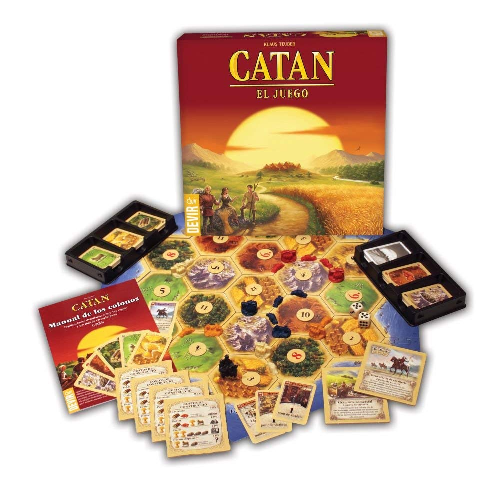
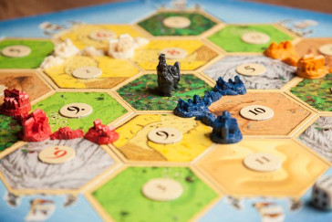

Catán
Catan es un juego de mesa para toda la familia que se ha convertido en un fenómeno mundial. Desde su aparición en Alemania ha vendido más que muchos de los juegos más tradicionales. Se trata de un juego que aúna la estrategia, la astucia y la capacidad para negociar y en el que los jugadores tratan de colonizar una isla, Catán, rica en recursos naturales. Construyendo pueblos, estableciendo rutas comerciales, etc… Catan ha vendido más de 2 millones de ejemplares en Europa y América. Por si esto no fuera bastante, ha sido galardonado en Alemania y Estados Unidos como Juego del Año. El juego básico de Catan, a la venta desde hace más de 10 años en España, ha marcado un hito en toda Europa en cuanto a juego de planificación, colaboración y, por supuesto, diversión. No hace falta comentar que es la única pieza indispensable de Catan en tu ludoteca. A partir del básico se abre todo el abanico de expansiones que la isla de Catán te ofrece.
Si resultas ganador, no te piensen que lo pordrás serlo en la próxima partida, ya que la isla cambiará y tendrás que cambiar de estrategia
¡No pierdas la oportunidad de comprar Catan juego de mesa en nuestra tienda la mejor precio!